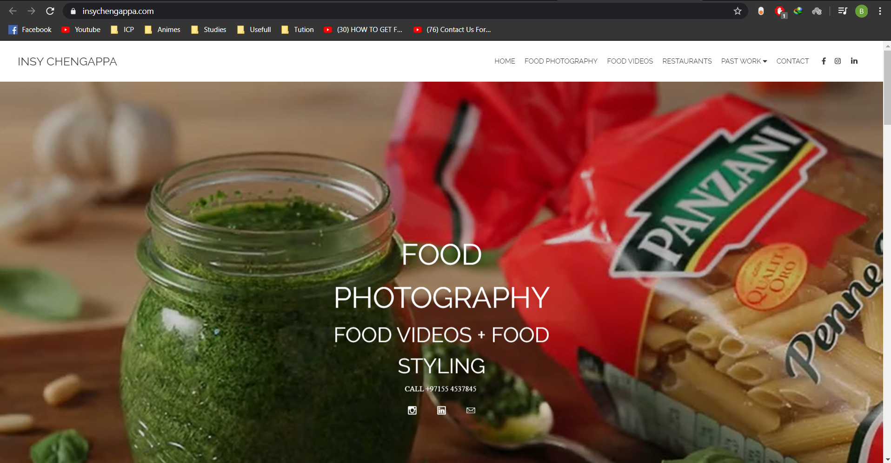
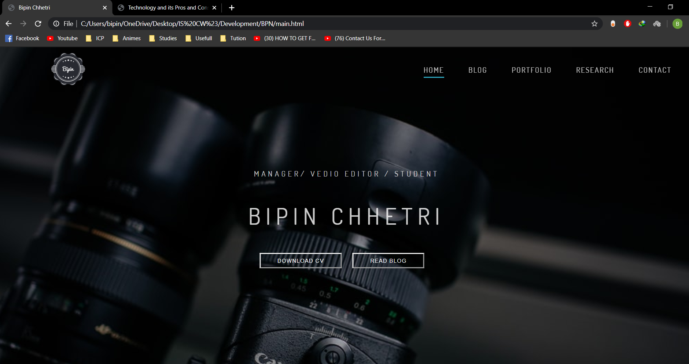
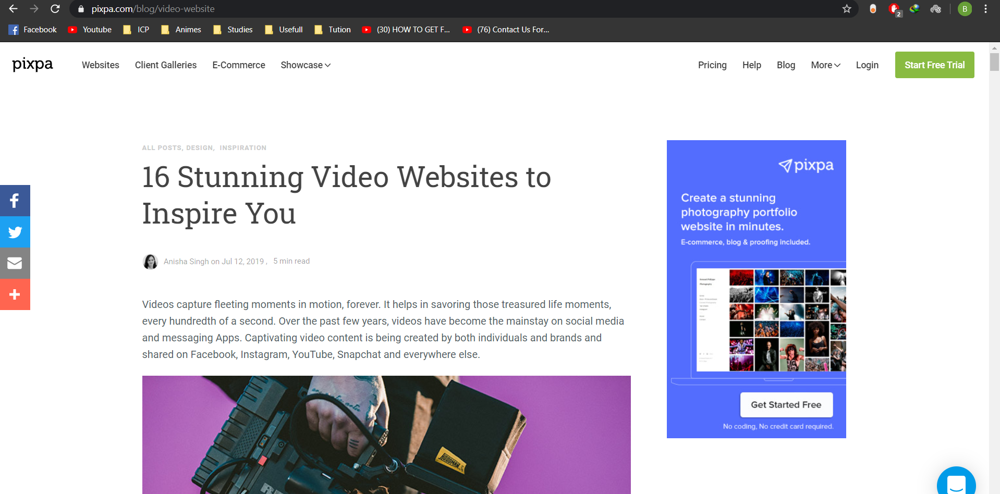
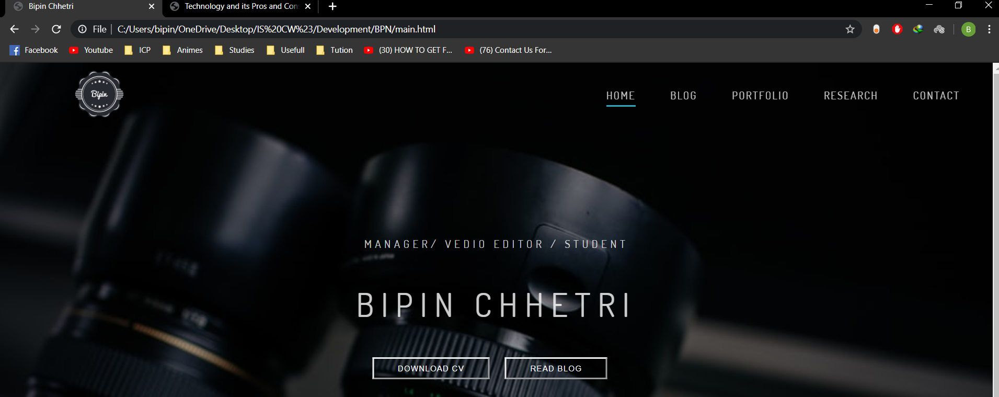
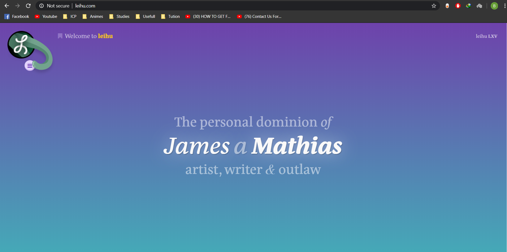

RESEARCH
| Descriptions | Researched Websites | My Website |
|---|---|---|
1. With the idea of the website (www.insychengappa.me) shown in the table, I have made my home page. |
 |  |
2. From the website shown in the table, I took the idea of the header and applied it in my website. |
 |  |
3. With the idea from the given website in the table, I have made my blog page after inserting an image and writing a quotes on it. |
 |  |
4. From the given example of a contact page , I got the idea of to develop a contact page with a form validation for my contact page. |
 |
 |
5. From the website as shon in figure , I took the knowledge of adding footer and then applied it in the all pages of my porfolio website. |
 |
 |